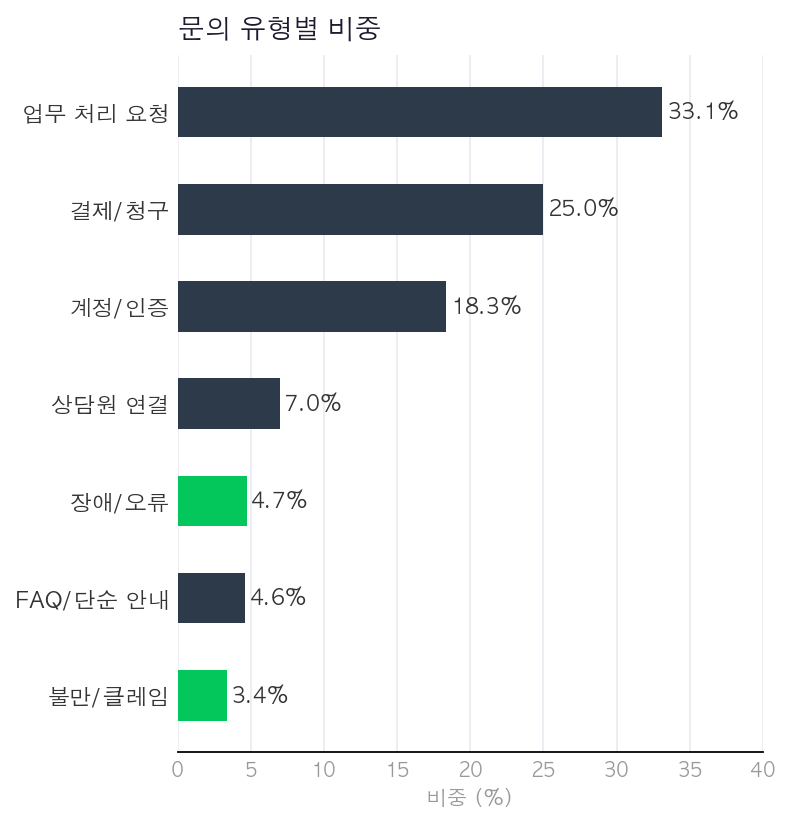
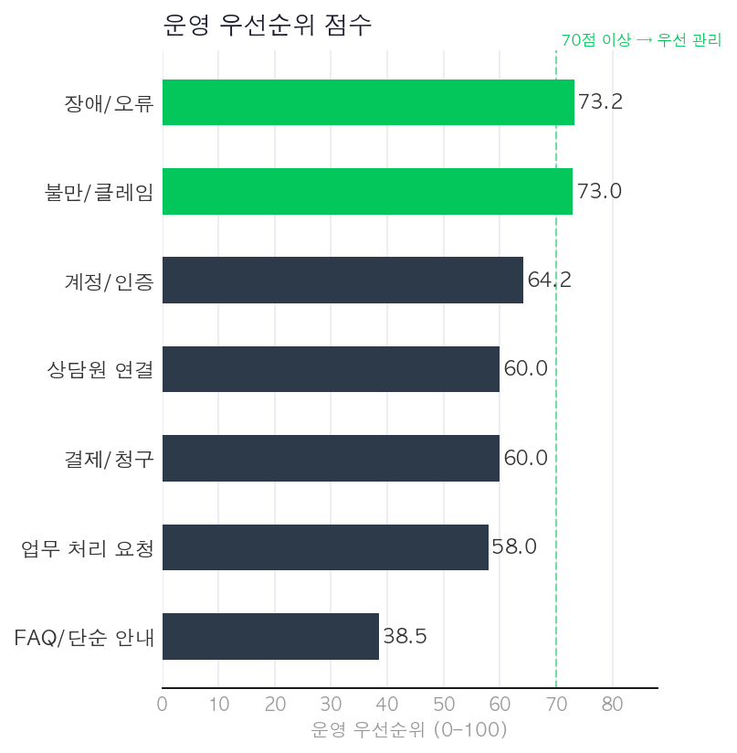
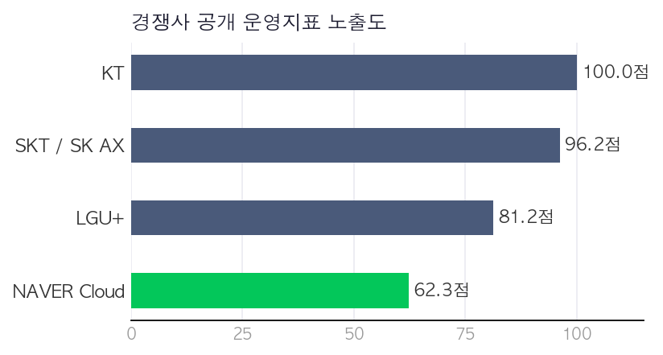

AICC 운영 인사이트 분석
CLOVA AiCall 도입 문의 · CS 운영 · 품질관리 지표화 프로젝트
공개 고객지원 데이터 29,872건과 경쟁사 공개지표 35건+를 바탕으로, CLOVA AiCall 운영 담당자 관점에서 고객 문의·CS 현황·품질관리·경쟁사 모니터링 항목을 구조화한 프로젝트
Why AICC
NAVER Cloud AI Solution 운영 직무는 AI PaaS 상품의 고객 문의, CS 운영 현황, 경쟁사 동향, 품질 평가를 관리해야 한다. CLOVA AiCall은 고객센터 운영·상담 자동화·상담원 연결·품질관리와 직접 연결되는 상품으로, 공개자료 기반 운영 지표화 프레임을 설계하기에 적합한 대상으로 판단했다.
- 공개 고객지원 데이터 29,872건 → 8개 운영 레이블로 재분류, AiCall 시나리오·Auto QA·Handoff 필요도 점수화
- KT·LGU+·SKT/SK AX는 수주액·고객사 수·월 콜 처리량 등 정량 지표를 적극 공개 → 경쟁사 모니터링 항목으로 설정
- 공식 가이드에서 확인 가능한 통화 건수·채널 수·상담원 연결률을 월간 KPI 기준으로 정리
Data Source
| 구분 |
출처 |
규모 |
| 문의 데이터 |
Bitext Customer Support (HuggingFace) |
26,872건 |
| 문의 데이터 |
Support Ticket 샘플 |
3,000건 |
| 경쟁사 지표 |
공개 보도자료 · IR · 발표자료 |
35건+ |
| 공식 가이드 |
CLOVA AiCall 공식 문서 |
정성 |
| 도입 시뮬레이션 |
AiCall 도입 문의 양식 기반 |
50건 |
담당업무 연결
계약·정산
CS 운영
경쟁사 모니터링
워크플로우 문서화
품질 평가
29,872건공개 고객지원 데이터
35건+경쟁사 공개 지표
8개운영 레이블
3개운영 개선 실행안
AICC 운영 인사이트 분석
|
Analysis Design
2 / 4
Analysis Design — 공개자료를 운영 KPI로 바꾸는 방식
Step 1
공개 고객지원
데이터 수집
29,872건
→
Step 2
8개 운영
레이블 분류
업무처리 / 결제 / 계정
장애 / 불만 / FAQ / 기타
→
Step 3
AiCall 시나리오
매핑
Main / Global / Repair
→
Step 4
운영 KPI
우선순위 산출
Auto QA · Handoff · Repair
0–100점 점수화
→
Step 5
경쟁사
지표 비교
공개자료 기준 4개사
AICC 운영 인사이트 분석
|
Key Findings
3 / 4
Key Findings — 문의량과 운영 리스크는 달랐다
① 문의량 기준 분포 (건수 비중 %)

② 운영 우선순위 점수 (0–100)

문의량 기준으로는 업무 처리 요청(33.1%)이 최다였지만, 운영 우선순위 기준으로는 장애/오류(73.2점)·불만/클레임(73.0점)이 최상위였다. Auto QA·Handoff·Repair 필요도를 종합한 운영 리스크 기준으로 재해석하면 품질관리 우선 대상과 자동화 우선 대상이 명확히 분리된다.
AICC 운영 인사이트 분석
|
Operation Proposal
4 / 4
Operation Proposal — 분석 결과 → 운영 액션
| 발견 (Key Finding) |
운영 액션 (Action) |
직무 연결 |
| 업무 처리 요청 33.1% — 문의량 최다 |
Main Scenario 표준화 · API 연동 프로세스 문서화 |
워크플로우 문서화 |
| 장애/오류 73.2점 — 리스크 최상위 |
Auto QA + Human Handoff + Repair Scenario 강화 |
CS 운영 · 품질 평가 |
| 불만/클레임 Auto QA 필요도 95점 |
상담 품질 모니터링 기준 수립 · 퀄리티 매니지먼트 |
품질 평가 |
| FAQ/단순 안내 38.5점 — 자동화 적합 |
Global Scenario 자동화 우선 설계 |
워크플로우 문서화 |
| 신규 도입 고객 분류 기준 필요 |
상담사 수·평균 콜 수·기존 솔루션 기반 도입 유형 분류표 설계 |
계약·정산 |
| 경쟁사 KT·SKT 정량 지표 풍부 공개 |
수주액·고객사 수·Auto QA 성과 정기 모니터링 |
경쟁사 모니터링 |
Competitor Insight — 공개자료 기준 운영지표 노출도

KT — 수주액·고객사 수·월 콜 처리량 정량 지표 가장 풍부
SKT/SK AX — 구독형 AICC·상담 요약·KMS 검색 강조
LGU+ — AICC 매출 목표·Auto QA 고도화 방향 적극 공개
NAVER Cloud — 공식 가이드 기준 운영 구조 확인됨
※ 실제 시장점유율이 아닌 공개자료 기반 운영지표 노출도 점수
※ Limitation — 본 분석은 실제 NAVER Cloud 내부 데이터가 아닌 공개 고객지원 데이터와 외부 공개자료 기반이다. 결과는 실제 고객 현황이나 시장점유율이 아니라 운영 지표 설계와 경쟁사 모니터링 프레임 검증용 참고 분석이다. 후속 분석에서는 실제 운영 로그·한국어 콜센터 데이터를 반영해 개선할 수 있다.